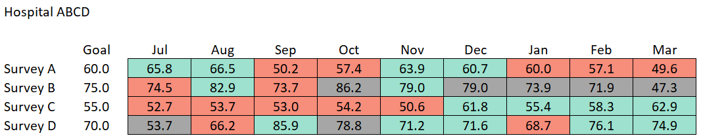

In my role as an analyst, my team and I are required to put together reports that summarize each hospital’s patient satisfaction performance in a table. These are reviewed by our system’s executive leadership team and the hospital directors in monthly operational reviews (MORs). The format I inherited, loosely recreated below with fake data, color codes each month’s performance against the hospital’s goal: green when outperforming and red when underperforming.

“But wait!” you may ask, “what do the gray cells mean?” That, dear reader, has been the source of most of my organizational frustration in this role. When the number of surveys returned is less than 30 for a given month, we simply gray-out that cell under the guise of the phrase, “30 is not statistical.”
I don’t think this practice (or something similar) is unique to my organization — I’ve seen similar outputs from previous employers and in other companies’ published reports. While this isn’t the best use of the underlying data, I understand why this sort of method gets adapted into so many organizational lexicons: companies want their decisions to be based on data and their understanding, albeit incorrect, is that a sample size less than 30 doesn’t provide meaningful info. For this reason, I think it’s important to explore where this sentiment came from, what the problems with this data-presentation style are, what I think would be a better way of presenting the data, and ultimately why companies may be hesitant to update their methodology.
Where does this come from?
At first glance, 30 is a pretty arbitrary number to use as a cutoff. In this case, this cutoff can cause downstream issues with interpreting the data because the difference between n = 30 and n = 31 is so visually distinct! In our case, the cutoff of 30 was passed down from one of our previous survey vendors, but I believe that the wider root of why this value appears has to do with the central limit theorem.
The central limit theorem states that as a sample size increases, the probability distribution of the sample mean approaches a normal distribution, regardless of the source distribution! As a rule of thumb, this theorem holds true when the sample size is at least 30. In practice, this means that when there are at least 30 samples, we can generally approximate the distribution as normal. The central limit theorem is incredibly useful and an important foundation for a wide array of statistical techniques. Stating that the data doesn’t meet the criteria for the central limit theorem to hold, however, is very different from saying that data is worthless when the sample size is less than 30!
Problems with this approach
- Sometimes, the source distribution is known, and whether or not the central limit theorem holds is irrelevant! In my particular case, I am often dealing with patient satisfaction data that lies on a 0-100% scale. This is the perfect use case for modeling the sample with the beta distribution (which is bound by 0 and 1).
- As mentioned above, graying-out samples where the sample size is less than 30 visually communicates that some months can be ignored. This is a waste of valuable data! While it is true that a larger sample size implies greater confidence in the score, the confidence interval widths for
n = 30 and n = 31 are not so different and we can still estimate the uncertainty with the smaller sample.
- Tabular data is incredibly difficult to parse at-a-glance! Research shows that spatial encoding (e.g., length, position) is the most interpretable mode of data presentation. Intuitively, it makes sense — there’s a lot less mental overhead involved in looking at a set of points and comparing positions collectively than stringing together several comparisons of individual pairs of numbers in your head.
A better approach
When the underlying distribution is known, a better approach would be to display the data in a plot, regardless of n-size, and use a confidence interval to indicate uncertainty. In this case, we can plot each survey’s scores over time with a line and use a shaded area for the confidence interval.

This, I believe, has a few benefits.
- This is simply more visually appealing than the table. I (along with most people, I’d assume) prefer the look of a well formatted plot over a well formatted table (even if well formatted, a table is still a big block of text).
- It is far easier to discern the overall trend. Instead of reading and trying to compare values, we can simply see which direction the line is moving!
- Most imortantly, we do not throw out valuable data because of sample size. We actually end up encoding more information — n-size, which was missing from the table, is encoded in the width of the confidence interval (a smaller confidence interval indicates a larger sample). In this toy example, surveys B and D included a few months with fewer than 30 returns — can you tell which months they were without looking at the table?
The tradeoff is that we can no longer explicitly see each month’s score and it is a bit harder to tell if a hospital is meeting the goal when the score is close. In my experience, however, this is not how formatted tables are used — executives that I interact with typically try to determine overall trends from tabular data!
Organizational resistance
While the changes suggested here have clear benefits over the table, I’ve thus far been unsuccessful in any attempts to change the reporting methodology and I suspect that similar efforts at other companies would encounter similar organizational resistance. Much of what’s stated below is anec-data, but I assume will ring true to anyone who has struggled with getting their proposed operational changes implemented.
As companies scale, it becomes more & more difficult to implement change. On top of that, some industries (including Healthcare, the one I work in) are similarly inertial on an industry level. In this particular case, changing a report’s format may seem small in the grand scheme of things, but this is the same format the executive team has been seeing since 2017! The system executives and individual hospital leaders have a rapport and vernacular built around these monthly reports in this format — updating the format similarly requires that the executives and leaders update their long-held understanding and language built around tabular data.
Tabular data in general shows up in reports across industries. My hunch is that the main driver of this is the widespread integration of Microsoft Excel as the workhorse for most analysts’ tasks. Excel get wide use as a calculator, a data storage system (eek!), and a presentation tool. Most analysts are incredibly comfortable working in Excel and while it is possible to create plots that show both the score and confidence interval, it is far simpler to apply a bit of conditional formatting and submit the raw data as the report itself.
This is not to say that tabular reports have no use — when individual values are important, tabular reports are preferred! If, however, the goal is to understand trends over time or relationships between values, plots are a far better option!